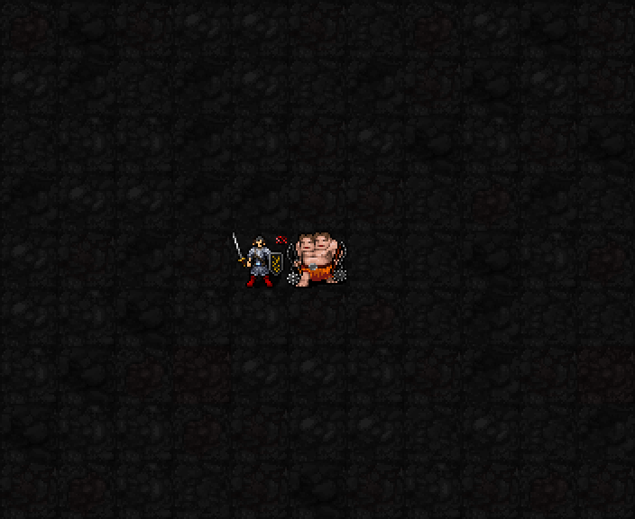
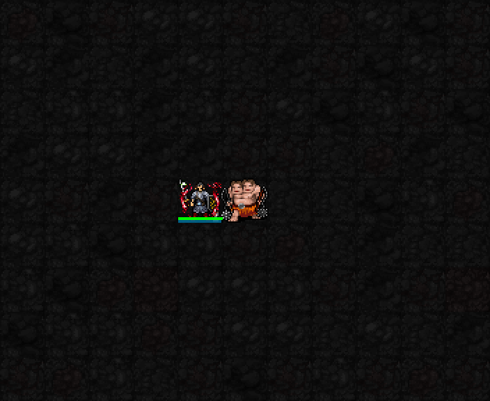

실제 SDL 게임 화면을 확대해 느리게 반복했습니다. 캡처 위에 효과를 덧그리지 않았습니다. 높은 자원·고정 장비의 테스트 전투장이며 일반 던전 플레이 영상은 아닙니다. 기존 피해·비용·지속시간은 그대로입니다.
같은 적과 근접전을 이어갈 때 명중·살육·회피 강화. 실제 근접 공격으로 가호가 생기면 몸체 양옆에 붉은 검기 잔광이 보입니다. 지정 상대가 살아 있고 인접하며 유지시간이 남을 때만 표시합니다. 끝에서는 만료 후 잔광이 사라집니다.

일반 근접 공격 한 번의 시간으로 두 번 공격합니다. 대상 위치에 붉은 칼날이 서로 다른 방향으로 연속 교차합니다. 참격 이미지는 공격 동작 표시이며 주변 칸을 추가로 타격하지 않습니다. 두 번의 동작이 모두 명중했다는 표시는 아닙니다.
지정 상대와의 결투 강화 및 처치 보상. 실제 저장된 시전 위치 중심 5×5 영역에 붉은 뿔과 오니 문양을 유지합니다. 문양은 모든 캐릭터 아래에 그립니다. 벽이나 다른 적이 있어도 통과 불가 벽을 생성하는 기술은 아닙니다. 마지막은 지속시간 만료 후입니다.
